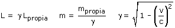
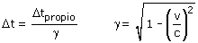

Relatividad: Conversión de magnitudes Siempre habrá dos observadores en movimiento relativo. Es decir, uno se moverá respecto al otro o el otro se moverá respecto al uno (No tiene sentido preguntarse quién se mueve de verdad) Uno de los observadores mide la longitud y la masa de un objeto que ve en reposo (Longitud y masa propias). Estas mismas magnitudes medidas por el otro observador tendrán diferentes valores (Longitud y masa no-propias) Relación entre magnitudes propias y no propias:  Uno de los observadores mide el intervalo de tiempo transcurrido entre dos sucesos que al principio y al final ocurren en la misma posición (Tiempo propio). Este intervalo medido por el otro observador tiene otro valor (Tiempo no-propio) Relación entre tiempo propio y no-propio  |